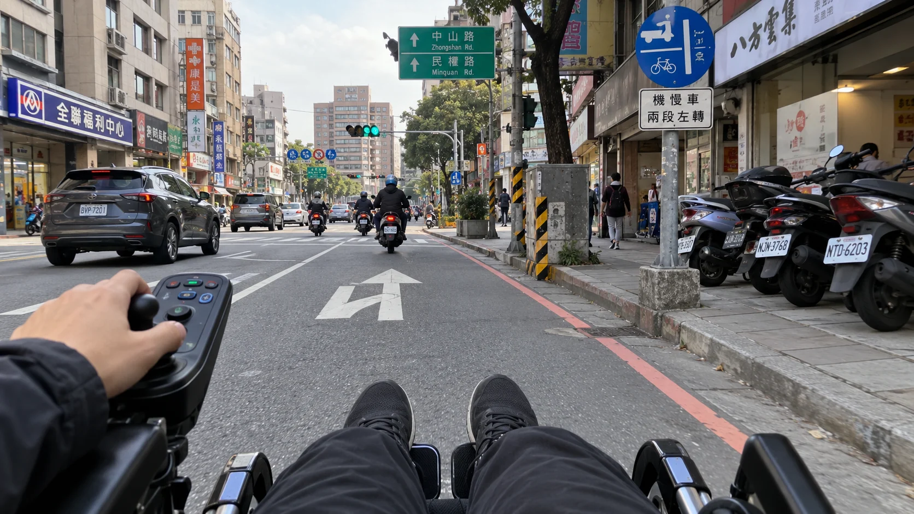
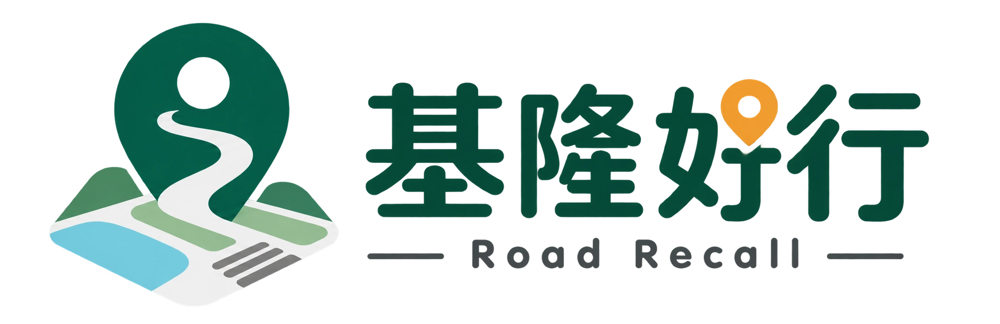
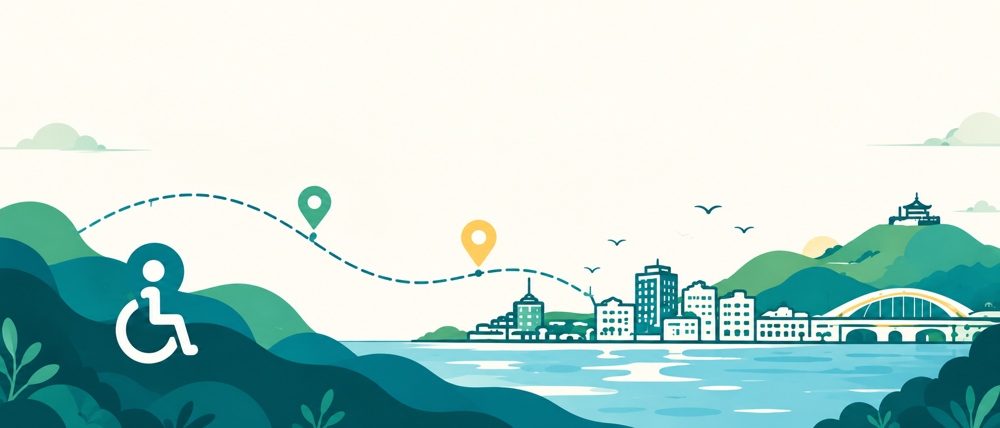

街道與車流
人行空間被車流切斷
人車混流、路緣與人行道接不起來時，移動路線可能被迫轉向車道。看起來很近的路，也可能沒有安心通過的方式。


OpenStreetMap 底圖 · 基隆市
在首頁直接查看仁愛區首批回報位置與處理狀態；點選地圖標記即可開啟該案件。
簡單三步，掌握一段路
在基隆地圖上搜尋地點，或查看附近的通行回報。
查看障礙類型、輪椅通行程度與回報照片，先評估合適路線。
親自經過後，可補充路況變化，讓後來的人參考更新資訊。
社群資訊，請配合現場判斷目前地圖內容為民眾回報與共同記錄，不等同政府認定、施工進度或官方派工；路況可能改變，請依現場安全狀況調整。
看見障礙、分享現場，讓每一次移動都多一份參考。